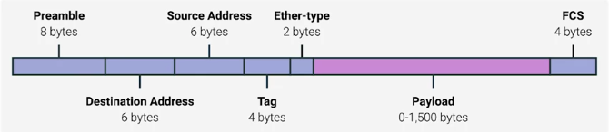

La capa de enlace de datos
Direcciones Ethernet y MAC
El protocolo que más se usa para enviar datos a través de enlaces individuales se conoce como Ethernet. Ethernet y la
capa de enlace de datos proporcionan un medio para que el software en los niveles más altos de la pila envíe y reciba
datos. Básicamente, uno de los propósitos principales de esta capa es abstraer la necesidad de que otras capas se
hagan cargo de la capa física y del hardware en uso. Al transferir esta responsabilidad a la capa de enlace de datos,
las capas de Internet, transporte y aplicación pueden funcionar de la misma manera sin importar cómo se conecte el
dispositivo en el que se ejecutan.
Ethernet es una tecnología bastante antigua. Nació en 1980 y su primera estandarización bien acabada vio la luz en
1983. Entonces, las redes de computadoras eran totalmente diferentes a las de hoy. Una de las diferencias notables en
la topología LAN era que el conmutador o concentrador conmutable no se había inventado aún. Esto implicaba que, con
frecuencia, muchos o todos los dispositivos en una red compartieran un único dominio de colisión. Un dominio de
colisión es un segmento de red en el que solo un dispositivo a la vez puede comunicarse. Esto se debe a que todos los
datos en un dominio de colisión se envían a todos los nodos conectados a él. Si dos computadoras enviaran datos a
través del cable al mismo tiempo, esto daría lugar a colisiones literales de la corriente eléctrica que representa
nuestros unos y ceros, y su resultado final sería algo ininteligible. Ethernet, como protocolo, resolvió este
problema mediante el uso de una técnica conocida como acceso múltiple con detección de portadora y detección
de colisión (carrier sense multiple access with collision detection). CSMA/CD se usa para
determinar cuándo los canales de comunicación están despejados y el dispositivo está libre para transmitir datos. La
forma en que CSMA/CD funciona es bastante simple: si no hay datos en transmisión actual en el segmento de red, un
nodo se sentirá libre de enviar datos. Si resulta que dos o más computadoras intentar enviar datos al mismo tiempo,
las computadoras detectan esta colisión y dejan de hacerlo. Luego, cada dispositivo involucrado en la colisión espera
durante un intervalo aleatorio de tiempo antes de intentar enviar datos de nuevo. Este intervalo aleatorio ayuda a
prevenir que todas las computadoras involucradas en la colisión vuelvan a colisionar la próxima vez que intenten
transmitir algo.
Cuando un segmento de red es un dominio de colisión, todos los dispositivos ubicados en ese segmento reciben todas
las comunicaciones de todo el segmento, lo que implica que necesitamos una manera de identificar a qué nodo estaba
destinada la transmisión. Aquí es donde entra en juego algo conocido como dirección de control de acceso a
medios, o dirección MAC. Una dirección MAC es un identificador único global acoplado a una
interfaz de red individual. Es un número de 48 bits representado generalmente por seis grupos de dos números
hexadecimales. Octeto es otra forma de llamar a cada grupo de números en una dirección MAC. Un
octeto, en redes informáticas, es cualquier número que se pueda representar con 8 bits. En este caso, dos dígitos
hexadecimales pueden representar los mismos números que 8 bits. El número total de posibles direcciones MAC que
podrían existir es 2 a la potencia 48, es decir, 281,474,976,710,656 posibilidades únicas. Una dirección MAC se
divide en dos secciones. Los primeros tres octetos de una dirección MAC se conocen como Identificador único
de organización (OUI). Son asignados a fabricantes de hardware individuales por el IEEE, o Instituto de
Ingenieros Eléctricos y Electrónicos. Los últimos tres octetos de la dirección MAC pueden asignarse de cualquier
forma que el fabricante quiera con la condición de que solo asigne cada dirección posible una sola vez para que todas
las direcciones MAC sigan siendo globalmente exclusivas. Ethernet utiliza direcciones MAC para garantizar que los
datos que envía tengan una dirección para la máquina que envió la transmisión y otra dirección para la que debía
recibir esa transmisión. De esta manera, incluso en un segmento de red que actúa como un dominio de colisión simple,
cada nodo en esa red sabe cuándo el tráfico está destinado para sí.
Unicast, Multicast y Broadcast
Hasta aquí, hablamos de las formas que existen para que un dispositivo transmita datos a otro dispositivo. Esto es lo
que se conoce como unidifusión (unicast). Una transmisión de unidifusión siempre tiene como objetivo
solo una dirección receptora. A nivel de Ethernet, esto se hace mirando a un bit especial en la dirección MAC de
destino. Si el bit menos significativo en el primer octeto de una dirección de destino tiene un valor igual a cero,
eso significa que la trama de Ethernet está dirigida solo a la dirección de destino. Esto implica que se la enviará a
todos los dispositivos en el dominio de colisión, pero solo será recibida y procesada por el destino previsto.
Si el bit menos significativo en el primer octeto de una dirección de destino tiene un valor igual a uno, eso quiere
decir que estás tratando con una trama de multidifusión (multicast). Una trama de multidifusión está
configurada de manera similar para todos los dispositivos en la señal de la red local. La diferencia es que será
aceptada o descartada por cada dispositivo dependiendo de ciertos criterios, al margen de su propia dirección MAC de
hardware. Las interfaces de red se pueden configurar para que acepten listas de direcciones de multidifusión
configuradas para este tipo de comunicación.
El tercer tipo de transmisión de Ethernet se conoce como difusión (broadcast). Se envía una difusión
por Ethernet. a cada uno de los dispositivos en una LAN. Esto se logra mediante el uso de un destino especial
conocido como dirección de difusión. La dirección de difusión de Ethernet está formada solo por efes (F). Las
difusiones de Ethernet se usan de modo que los dispositivos puedan tener más información unos de otros.
Disección de un marco Ethernet

• Un paquete de datos (data packet) es un término amplio que describe cualquier conjunto simple de
datos binarios enviados a través de un enlace de red. El término paquete de datos no está vinculado con ninguna capa
o tecnología específica. Tan solo representa un concepto. Un conjunto de datos enviados desde el punto A hasta el
punto B.
• Los paquetes de datos a nivel de Ethernet se conocen como tramas de Ethernet (Ethernet frame). Una
trama de Ethernet es una recopilación de información altamente estructurada, presentada en un orden específico. De
esta manera, las interfaces de red en la capa física puede convertir un string de bits que se desplaza a través de un
enlace en datos significativos, o viceversa. Casi todas las secciones de una trama de Ethernet son obligatorias y la
mayoría de ellas tienen un tamaño fijo.
• La primera parte de una trama de Ethernet se conoce como "preámbulo". Un preámbulo tiene 8 bytes o
64 bits de largo y se puede dividir en dos secciones. Los primeros siete bytes son una serie de unos y ce
ros que se
alternan. Actúan parcialmente como un búfer entre tramas y también los usan las interfaces de red para sincronizar
los relojes internos con los que regulan la velocidad a la que envían los datos. A este último byte del preámbulo se
lo conoce como el SFD o delimitador de inicio de trama. Le indica a un dispositivo
receptor que el preámbulo terminó y que ahora siguen los contenidos reales de la trama.
• Inmediatamente a continuación del delimitador de inicio de trama viene la dirección MAC de
destino. Esta es la dirección del hardware del destinatario previsto. A eso le sigue la dirección
MAC de origen, es decir, dónde se originó la trama. No olvides que cada dirección MAC tiene 48 bits o 6
bytes de longitud.
• La siguiente parte de una trama de Ethernet es el campo EtherType. Tiene 16 bits de largo y solía
describir el protocolo de los contenidos de la trama. Vale la pena señalar que en lugar del campo EtherType, también
podrías encontrar lo que se conoce como un encabezado VLAN. Esto indica que la trama en sí es lo que
se llama una trama VLAN. Si hay un encabezado VLAN presente, el campo EtherType viene después. VLAN significa
"LAN virtual". Es una técnica que te permite tener múltiples LAN lógicas funcionando en el mismo
equipo físico. Cualquier trama con una etiqueta VLAN se entregará solamente desde una interfaz de conmutador
configurada para retransmitir esa etiqueta específica. Así, puedes tener una sola red física que opera como si fueran
múltiples LAN. Las VLAN se utilizan generalmente para segregar diferentes formas de tráfico. Podrías ver los
teléfonos IP de una empresa operando en una VLAN, mientras todos los equipos de escritorio operan en otra.
• Después de esto, encontrarás la carga útil de datos (data payload) de una trama de Ethernet. En
términos de red, una carga útil son los datos reales que se transportan, es decir, todo lo que no es un encabezado.
La carga útil de datos de una trama de Ethernet tradicional puede medir entre 46 a 1500 bytes. Esto contiene todos
los datos de las capas superiores como las capas de IP, de transporte y de aplicación que realmente se están
transmitiendo.
• Después de esos datos, tenemos lo que se conoce como secuencia de verificación de tramas (frame
check sequence). Este es un número de 4 bytes, o 32 bits, que representa un valor de suma de verificación para toda
la trama. Este valor de suma de verificación se calcula realizando lo que se conoce como una verificación por
redundancia cíclica contra la trama. Una verificación por redundancia cíclica, o CRC, es un
concepto importante para la integridad de los datos y se usa en computación en general, no solo transmisiones en red.
Una CRC es básicamente una transformación matemática que usa división de polinomios para crear un número que
representa a un conjunto de datos más grande. Cada vez que realices una CRC contra un conjunto de datos, deberías
terminar con el mismo número de suma de verificación. La razón por la que se incluye en la trama de Ethernet es para
que la interfaz de la red receptora pueda inferir si recibió datos sin corrupción. Cuando un dispositivo se prepara
para enviar una trama de Internet, recopila toda la información que vimos, como el destino y las direcciones MAC de
origen, la carga útil de datos, etcétera. Luego realiza una CRC contra esos datos y adjunta el número de la suma de
verificación resultante como secuencia de verificación de tramas al final de la trama. Estos datos se envían a través
de un enlace y se reciben en el otro extremo. Aquí, todos los diversos campos de la trama de Ethernet se recopilan y,
ahora, el lado receptor realiza una CRC contra esos datos. Si la suma de verificación calculada por el receptor no
coincide con la suma de verificación en el campo de secuencia de verificación de la trama, los datos se desechan.
Esto se debe a que alguna cantidad de datos se debe haber perdido o dañado durante la transmisión. Entonces, queda a
decisión de un protocolo en una capa superior si esos datos se deben retransmitir. De por sí, Ethernet solo informa
sobre la integridad de los datos, no los recupera.
 Índice
Índice